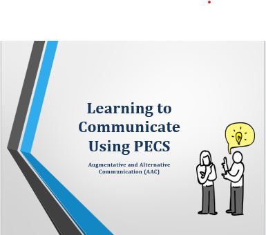
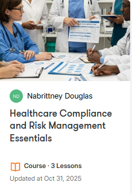
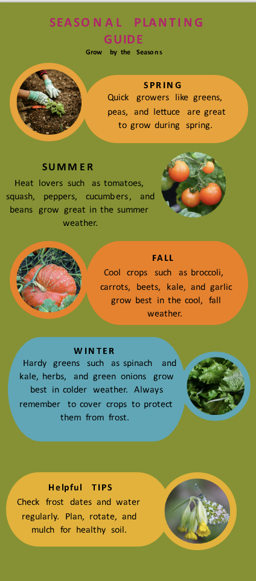

My Featured Projects

Learning to Communicate Using PECS
Description: Many of the teachers within my school were having a difficult time communicating with non-verbal students. As a member of the school's instructional leadership team, I met with the school administrators and the Speech-Language Pathologist to determine a school-wide strategy to overcome this problem. After discussing the issue, I developed a slide deck to train teachers on how to communicate with non-verbal students using a picture exchange communication system. Within the training, I explained the meaning of PECS, how to use it, and data on how it has improved communication skills for others. This was an instructor-led training. I used Microsoft PowerPoint to develop the training deck
Reflection:After delivering the training, the teachers gained insight into how to better communicate with their students. They understood the importance of a picture exchange system, and they learned strategies on how to create a system for their classroom. Some teachers needed a separate workshop and work time to create a personalized system, but overall, the training was successful.

Healthcare Compliance and Risk Management Essentials
Description: This was a self-development project that I created to help me develop technological skills to become more familiar with using AI to develop e-Learning courses. I developed an e-Learning course using the help of AI to help healthcare workers gain the knowledge needed to uphold compliance standards and manage risks in the clinical setting. The tool used to create this course was Articulate Rise. The audience for this course included all healthcare professionals. This was a self-guided course that included interactive activities.
Reflection:After completing the project, I noticed that the course was missing key elements for accessibility. I had to reorganize the course to avoid information overload and add elements such as audio, closed captions, and an accessible font. In the end, the course met the goal of the course objectives, and I was able to develop skills on how to better use AI.

Seasonal Planting Guide
Description: As a member of the school's gardening committee, I created an infographic to give teachers and students a guide on what to plant during each season. Many of the students who joined the gardening club had no experience with gardening and did not know that certain plants could only be planted during specific seasons. The infographic that was created lists each season and the types of vegetables that should be planted during that season, according to our planting calendar in our zip code. The infographic also includes pictures and bright, inviting colors that help draw attention to important information. I created this guide using Canva. The audience for this infographic included students, teachers, and gardeners.
Reflection: By creating this infographic, I was able to share important information about gardening and planting within the seasons. Not only did students gain new knowledge, but teachers who were new to vegetable gardening did as well. In the end, I was able to meet my intended goal of sharing pertinent planting information by creating a seasonal planting guide.